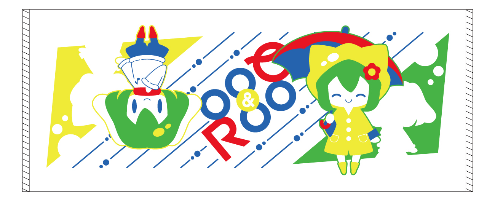

Cr i m s o n R a i n c o a t
R Q C D - 0 0 4
INTRODUCTION
止まない雨は、ないはずだった。
「いつかふたりは離れ離れになってしまうのか？」
言えずに積もる不安は雨となり、ふたりの日常を塗り替えていく。
降り止まぬ雨の中、新たな日常を楽しもうとする姉と、不変を願う妹。
小さな綻びから生まれたすれ違いが、ふたりの絆を試すのだった。
| Num. | RQCD-004 |
| Spec. | 1 Disc(Include 10 songs)
3つ折りデジパック仕様 |
| Price. | 1,000 yen(Event) / 1,400 yen + tax(Shop) |
| Place. | C92 2017.08.11(FRI)
東7 "の"-02ab
ラクエスク + Binzokomegane Girls Union |
| Shop. | MELONBOOKS / TANO*C STORE
DIVERSE DIRECT / AKIBA HOBBY |
Jacket Image Download
TRACKLIST
- 01.雨音のワルツシャルロ + どぅび
- 02.June in Wonderlandaran + 十恵
- 03.My Home CaffeteriaC-Show + えきあ
- 04.Rainy DropSnail's House + ひかがみひなみ
- 05.A Direction of Youstereoberry + 甲斐 莉乃
- 06.Ref-Rain HazeDJ Noriken + るーく
- 07.ハイド・アンド・シーク / 不安に陰る家Hommarju + はちぷよ
- 08.Il pleutm@sumi + ナツメサク
- 09.夕立と嘘Feryquitous + るーく
- 10.Rainy Days Never StayScarfaith + pen
STAFF
Illustration
Music
Design
Mastering
- DJ NorikenSketch UP! Rec.
Produce
- RaqesQueWebsite
- murAta Yuzimultieulogy
*Special*

新作グッズ「ルーアンドクーフェイスタオル Ver.CR」Designed by くるみあべし
おねだん: 1,000 yen